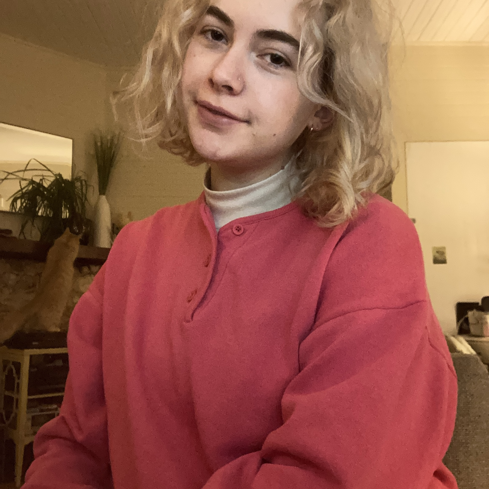

About
Liza is local to Chapel Hill, North Carolina. She graduated from UNC Chapel Hill with a Bachelor of Fine Arts with an Art History Emphasis in 2018. She is an artist, designer, and is currently studying web development.
Projects
Horiseon Code Refactoring

Project 2
Resumé
- Education
- Work Experience
University of North Carolina Chapel Hill, Class of 2018, Academic Distinction
Bachelor of Fine Arts, Art History Emphasis
Double Minor in Women and Gender Studies and Environmental Science
Cashier/Front-of-House, Carrburritos, Carrboro, NC
May 2018-October 2020
Food handling and preparation, bartending, cash register operation and customer service. Created hand-drawn, artistic signage. Maintained safe and sanitary conditions during Covid-19.
Contact
- Email: lizaferguson19@gmail.com
- Phone: 919.619.2514